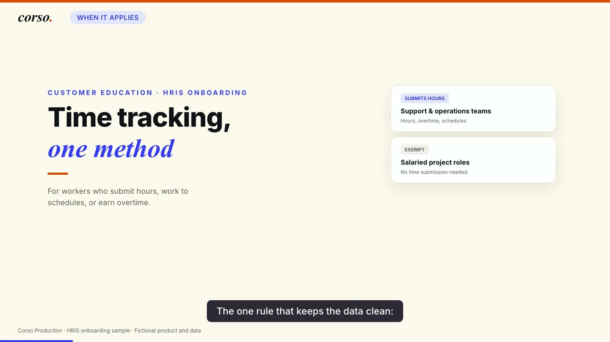
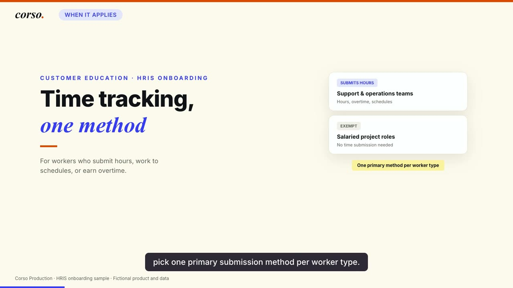
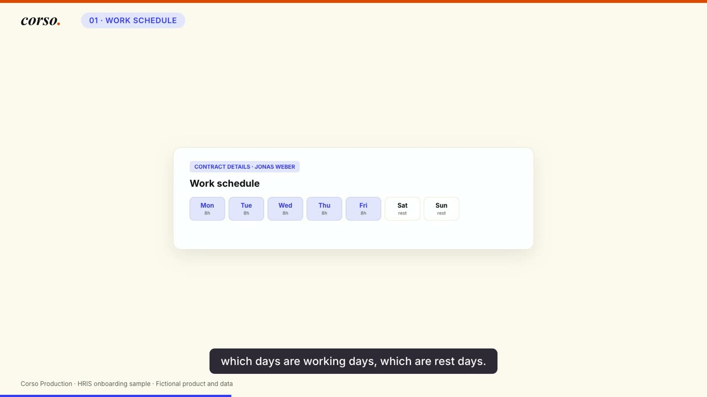
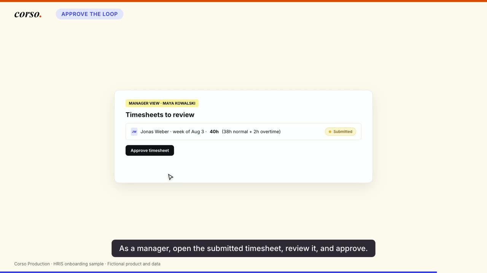
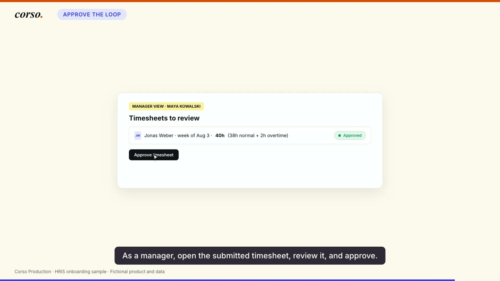

Training video ages faster than it can be re-edited
A product changes, one sentence in the script is now wrong, and the fix means opening an edit timeline and dragging every keyframe after the change. The cost of a correction is high enough that the correction usually does not happen, so the video quietly drifts out of date while still being the thing new hires watch.
That is a timing-architecture problem, not a video problem. If every visual cue is pinned to a hand-placed position on a timeline, the timeline is what you maintain. So the pipeline pins the visuals to the narration instead, and lets the narration own the clock.
From a document to a hosted video
Three moments, traced from voice to pixel
Each block below shows the same thing from three angles: the narrated sentence with its timing, the beat the generator derived from it, the line of animation code that binds to that beat, and the frames from the rendered file on either side of it.
{"s": 12.401, "e": 16.144, "t": "pick one primary submission method per worker type."}
"b0_rule": 12.45
tl.fromTo("#s0-rule", { opacity: 0, scale: 0.75 },
{ opacity: 1, scale: 1, duration: 0.45, ease: "back.out(1.7)" }, T.b0_rule);


The card reads One primary method per worker type. The narrator says pick one primary submission method per worker type. Nobody typed 12.45 anywhere: the generator wrote it from where that sentence begins in the audio.
{"s": 32.388, "e": 35.71, "t": "which days are working days, which are rest days."}
tl.fromTo(sel, { opacity: 0, y: 14 }, { opacity: 1, y: 0, duration: 0.35,
ease: "power2.out" }, T.b1_days + i * 0.12);
tl.fromTo("#s1-d6", { ... }, T.b1_days + 0.7);
tl.fromTo("#s1-d7", { ... }, T.b1_days + 0.82);

The five weekdays cascade at 120 ms apart from the beat. Saturday and Sunday are held back to +0.70s and +0.82s, which is where the sentence reaches which are rest days. The offsets are relative to the beat, so if the sentence moves, the whole cascade moves with it.
{"s": 89.376, "e": 94.282, "t": "As a manager, open the submitted timesheet, review it, and approve."}
moveClick(4, "#s4-approvebtn", T.b4_approve + 0.2, true);
tl.to("#s4-pend", { opacity: 0, duration: 0.25 }, T.b4_approve + 0.5);
tl.fromTo("#s4-appr", { opacity: 0, scale: 0.6 },
{ opacity: 1, scale: 1, duration: 0.4, ease: "back.out(1.8)" }, T.b4_approve + 0.6);


This is the one that shows the pattern properly. A simulated cursor travels and clicks, the pending state fades, and the approved badge pops, at +0.2s, +0.5s and +0.6s from a single anchor. The choreography is written as offsets from a spoken word, so it survives any change to what is said before it.
What the voiceover produces
One script runs the audio through transcription and writes the timing file. Its first line is an instruction to humans.
// GENERATED by make_v2.py (sentence subs + title gaps) - do not edit
const TOTAL = 103.0;
const SUBS = [ // 24 sentence cues, start and end
{"s": 12.401, "e": 16.144, "t": "pick one primary submission method per worker type."},
...
];
const T = { // 19 named beats the animation binds to
"b0_rule": 12.45,
"b1_days": 32.44,
"b4_approve": 92.59,
...
};
const SCENES = { // 5 scene windows, with gaps left for chapter cards
"sc00": { "s": 0.0, "e": 22.01 },
"sc01": { "s": 25.01, "e": 46.24 },
...
};The composition file makes 45 animation calls. Twenty-four bind directly to a named beat. The rest are either helper definitions that take the beat as an argument, or they read the subtitle and scene tables that the same voiceover produced.
The only literal times typed into the file are 0 for initial states, 0.15s for the opening title, and four closing cues written as TOTAL minus a fraction of a second, where TOTAL is the length of the audio. So it is not that nothing was hand-timed. It is that nothing about the content was.
The finished video
This is a de-branded portfolio cut of client work. The client's name, product name, URL and brand palette were replaced with my own studio's; the instructional design, the animated interface and the narration are the original. Every interface on screen was always drawn in HTML and CSS against invented sample data, so nothing here depicts a real product, and the on-screen footer says so. The source document that started the chain is not published.
The number that matters is the cost of a change
Production cost is the usual thing people quote, and it is the less interesting one. What this architecture actually buys is the cost of the second version.
| Step | Hand-timed edit | This pipeline |
|---|---|---|
| Re-record or regenerate the line | yes | yes |
| Re-time every cue after the change | by hand | regenerated |
| Re-check every downstream animation | by hand | not needed |
| Re-render | yes | yes |
The middle two rows are the whole argument. In a hand-timed edit they scale with the length of the video and with how early in it the change lands. Here they cost nothing, because the animation never knew the numbers in the first place, only the names.
What this system does not do
- It does not write the script. A model drafts from the source document, and then a human rewrites it, because narration that has never been read aloud by its author sounds like narration.
- It does not design the scenes. Every interface in the composition is hand-built HTML and CSS. The pipeline times them; it does not invent them.
- Beat names are a manual mapping. The generator produces the cues automatically, but deciding that a beat called
b4_approveis the one worth anchoring a click to is an editorial judgement made once per video. - It is not a service with an interface. It is a set of scripts I run. There is no queue, no retry policy, and no dashboard.
- The economics table above is reasoning, not a measured benchmark. I have not stopwatch-tested a hand-timed edit of the same video to compare against.
Why this one could be published at all
Every interface in these videos is drawn in HTML and CSS with invented data, rather than captured as screenshots. That was a production decision: drawn interfaces re-render at any resolution, animate natively, and never need a staging environment with realistic-looking data in it.
It turned out to be a decision about something else entirely. When the time came to make a portfolio cut, de-branding meant changing values in one block of design tokens. A sibling series in the same programme had embedded real screenshots, and de-branding that one meant rebuilding every screen from scratch, so it stayed unpublished.
The constraint that makes a system maintainable and the constraint that makes its output shareable turned out to be the same constraint. That is worth knowing before you start, not after.